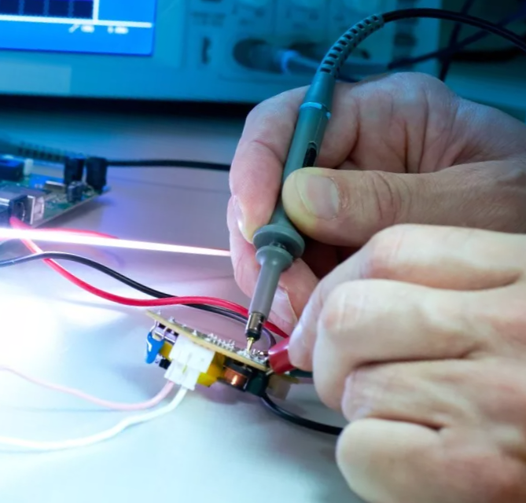

Разработчикам электроники
Если вы начинающий или среднего уровня разработчик, то данный курс вам будет особенно полезен. В настоящее время многие фирмы используют в своих разработках микроконтроллеры STM32. Во многих странах СНГ, использование STM32 в профессиональной сфере стало почти стандартом де факто. Знание этих микроконтроллеров позволит вам претендовать на гораздо более высокий оклад.